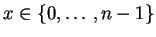
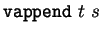

This module defines some basic vector functions - where basic really
just means pure vector functions which do not require any other
datatype. There is currently only one theorem vect_nth_append:
Given two vectors t and s with dimensions m and n,
respectively, retrieving the xth element in s with

is equivalent to retrieving the xth element in
.
** Module lib_vectors_basics Imports lib_vectors
vsingleton = ... : {T|Type}T->vect T one
vappend = ... :
{m,n|nat}{T|Type}(vect T m)->(vect T n)->vect T (plus m n)
vtack = ... : {m|nat}{T|Type}T->(vect T m)->vect T (suc m)
vect_nth_append = ... :
{T|Type}{n|nat}{x:fin n}{s:vect T n}{m|nat}{t:vect T m}
Eq (vect_nth T (f_plus x) (vappend t s)) (vect_nth T x s)